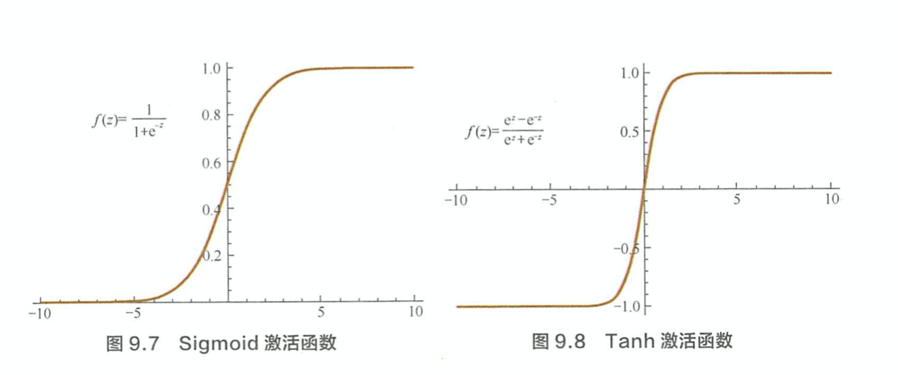
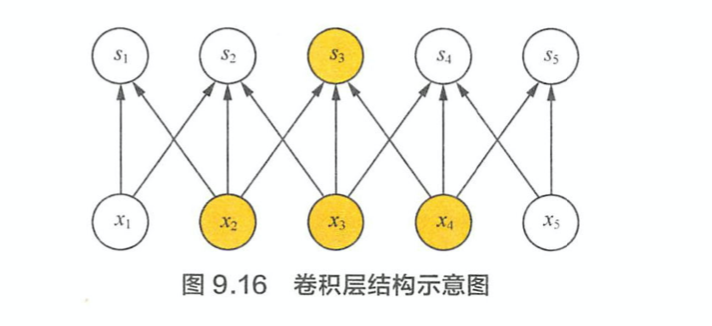
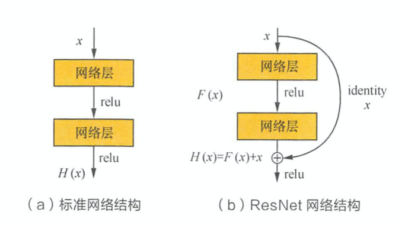
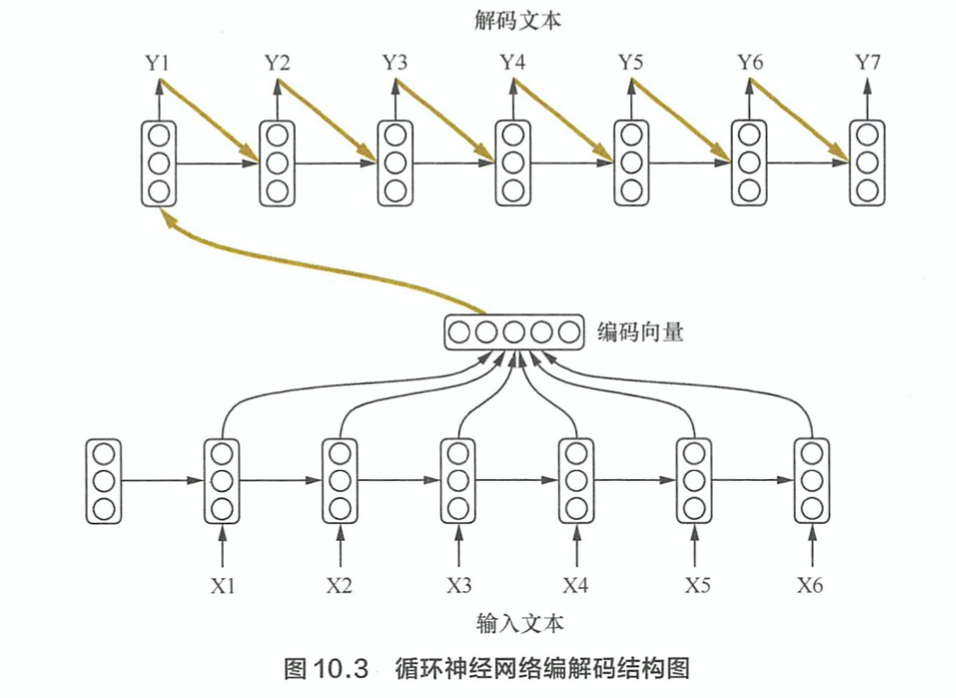
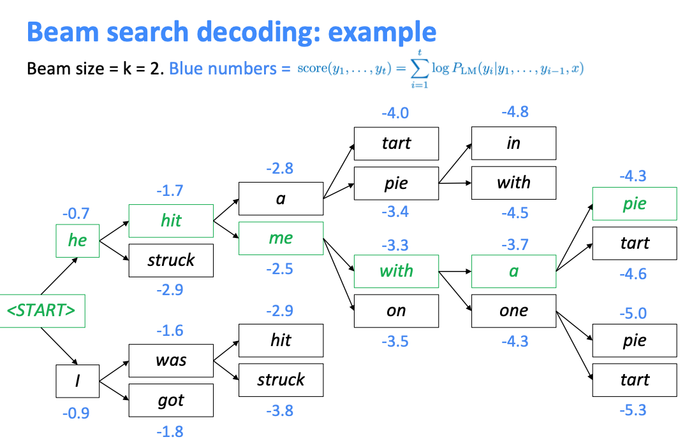

激活函数
写出常用激活函数及其导数
Sigmod
Tanh
Relu
为什么 Sigmoid 和 Tanh 激活函数会导致梯度消失现象？
Sigmoid 函数将输入映射到区间(0,1)，当 z 较大和较小时，f(z) 趋近于 1. 此时的梯度趋近于0. Tanh 实际相当于 Sigmoid 的平移。

ReLU 系列的激活函数相对于Sigmoid 和 Tanh 激活函数的优点是什么？局限性是什么？
优点: 1. 计算简便 2. 有效地解决梯度消失的问题 3. ReLU 单侧抑制提供了网络的稀疏表达能力
局限性: 神经元死亡的问题。因为$f(z) = max(0,z)$ 导致负梯度在经过该 ReLU单元时被置为 0，且之后也不被任何数据激活。实际训练时，如果 learning rate 过大，会导致一定比例的 neuron 不可逆死亡，使得整个训练过程失败。Leaky ReLU 可以有效地解决该问题。平方误差损失函数和交叉熵损失函数分别适用什么场景？
一般来说，平方损失函数适合于连续输出，并且最后一层不含 Sigmoid 或者 Softmax 激活函数的神经网络。交叉熵损失则更适合二分类和多分类场景。
神经网络训练技巧
神经网路训练时是否可以将全部参数初始化为0.
同一层的神经元都是同构的，他们拥有相同的输入，如果将参数全部初始化为相同的值，那么无论 forward 还是 backward 都会拥有完全相同的值。因此，我们需要随机地初始化神经网络的参数，以打破这种对称性。
为什么 Dropout 可以抑制过拟合，它的工作原理是什么？
Dropout作用与每份小批量训练数据，由于其随机丢弃神经元的机制，相当于每次迭代都在训练不同结构的神经网络。类比于Bagging方法，Dropout可被认为是一种实用的大规模神经网络的模型继承算法。对于包含 N 个神经元结点的网络，在 Dropout 的作用下可看做为$2^N$个模型的集成。这$2^N$个模型可认为是原始网络的子网络。应用Dropout包括训练和预测两个阶段，在训练阶段，每个神经元需要增加一个概率系数.
测试阶段是前向传播过程，每个神经元的参数要预先乘以概率系数p，以恢复在训练时该神经元只有p的概率被用于整个神经网络的前向传播计算
BatchNorm 的基本动机与原理是什么？ 在卷积网络中如何使用?
- 神经网络训练的本质是学习数据分布，因此我们常假设训练数据与测试数据是独立同分布的。如果分布不同将大大降低网络的泛化能力，因此我们需要在训练开始前对所有数据进行归一化处理。随着网络训练的进行，每个hidden layer的参数变化使得后一层的输入发生变化，从而每一批训练数据的分布也随之发生变化，使得网络在每次迭代中都需要拟合不同的数据分布，增大训练的复杂度以及过拟合风险。
- BatchNorm 是针对每一批数据，在网络的每一层输入之前增加归一化处理，将所有batch数据强制统一在统一的数据分布下。其中x^{(k)}为该层第 K 个神经元的原始输入数据，$E[x^{(k)}]$为这一个batch在第k个神经元的均值，$\sqrt{Var[x^{(k)}]}$为这一批数据在第k个神经元的标准差。
- 但是均值为 0，方差为1 这个限制太严格了，降低了神经网络的拟合能力。因此加入了两个可学习参数 $\beta$ 和 $\eta$在测试阶段，没有batch mean 和 var. 我们使用训练阶段的 running average.
- BatchNorm usually inserted after Fully Connected or Convolutional layers, and before nonlinearity.
Convolutional Neural Network
说说卷及操作的本质。
- Sparse Interaction（稀疏交互）： 卷积操作中，每个输出神经元仅仅与前一层特定局部区域的神经元存在连接权重。时间复杂度得到优化，过拟合的情况也得到改善。

- Hierarchical feature representation ：通常来说，图像，文本，语音等现实世界中的数据都是具有局部的特征结构，我们可以先学习局部的特征，再将局部特征组合起来形成更加复杂的和抽象的特征。这与人类视觉感知物体的共通的。
- Parameter Sharing （参数共享）：给定一个 feature map, 我们使用一个 filter 去扫这个 feature map. filter 里面的参数叫权重，这张图里每个位置都是被同样的 filter 扫描的，所以权重是相同的。参数共享的物理意义是使得卷积层具有平移不变性。例如，在猫的图片上先进行 convolution，再平移l 像素输出，与现将图片平移l 像素再进行卷积操作的输出结果是相等的。
- Sparse Interaction（稀疏交互）： 卷积操作中，每个输出神经元仅仅与前一层特定局部区域的神经元存在连接权重。时间复杂度得到优化，过拟合的情况也得到改善。
常用的池化操作有哪些？池化的作用是什么？
Mean Pooling 和 Max pooling. 池化操作除了能显著降低参数数量，还能够保持对平移、伸缩、旋转操作的不变性。Mean Pooling 对背景的保留效果较好，Max pooling 对纹理的提取效果更好。
特殊的池化方式有，Global Average Pooling，Spatial Pyramid Pooling(空间金字塔池化). Global Average Pooling 可以将 feature map 转换到特定的维度。SPP 主要考虑多尺度信息，例如计算1x1、2x2、4x4的池化并将结果拼接在一起作为下一层的输入。还可以使得我们构建的网络能够输入任意大小的图片，而不需要提前经过裁剪缩放等预处理操作CNN 如何用于文本分类任务？
对于文本来说，局部特征就是由若干单词组成的滑动窗口，类似于 N-Gram. CNN 的作用就是能够自动地对 N-gram 特征进行组合和筛选，获得不同抽象层次的语义信息。常用的应用如 char-based model, 把每个char 的 vector concat 在一起，然后使用 conv1d提取特殊的pattern 和 semantic.
ResNet 的核心理论是什么？
ResNet提出的背景是缓解深层的神经网络中梯度消失的问题。直观来讲，一个 L+1 层的网络不会比 L 层的网络效果差，因为我们简单地设最后一层为一个恒等映射即可。然而实际上深层网络反而会有更大的训练误差，这很大程度上归结于深度神经网络中的梯度消失问题。
如下图所示，输入$x$经过两个神经网络变换得到$F(x)$,同时 $x$ 短接到两层之后，最后这个包含两层的神经网络的输出为 $H(x) = F(x) + x$. 这样一来，$F(x)$被设计为只需要拟合x与目标输出H(x)的残差 $H(x) - x$. 如果某一层的效果足够好，那么多加层不会使得模型变差，因为该层的输出短接到了后面的层。
DenseNet 的核心理论是什么？
既将 $x_0$ 到 $l_1$ 层的所有输出feature map 通过 Channel concat在一起.由于在DenseNet中需要对不同层的feature map进行cat操作,所以需要不同层的feature map保持相同的feature size,这就限制了网络中Down sampling的实现.为了使用Down sampling,作者将DenseNet分为多个Denseblock. 在同一个Denseblock中要求feature size保持相同大小,在不同Denseblock之间设置transition layers实现Down sampling, 在作者的实验中transition layer由BN + Conv(1×1) ＋2×2 average-pooling组成.
循环神经网络
处理文本数据时，循环神经网络与前馈神经网络相比有什么特点？
一个长度为T的序列用RNN建模，展开之后可以看作是一个 T 层的前馈神经网络。其中，第$t$层的隐含状态$h_t$ 编码了序列前$t$个输入信息，可以通过当前的输入$x_t$ 和上一层神经网络的状态$h_{t-1}$计算得到. $h_t$和y的计算公式为:
其中，$f$ 和 $g$ 为激活函数，U 为输入层到隐藏层的权重矩阵，W 为隐藏层从上一时刻到一下时刻状态转移的权重矩阵。在文本分类中，$f$可以选取Tanh函数或者ReLU函数，$g$可以采用 softmax 函数。相比于CNN, RNN 由于具备对序列信息的刻画能力，往往能够得到更准确的结果。
循环神经网络为什么会出现梯度消失和梯度爆炸？有哪些改进方案？
RNN 求解采用 BPTT(back propagation through time) 算法实现，实际上是 back propagation 算法的变种。使用 BPTT算法学习的RNN 并不能捕捉长距离的依赖关系，这种现象主要源于神经网络中的梯度消失。因为RNN 的梯度可以写成连乘的形式。详细可参考 https://zhangruochi.com/BackPropagation-through-time/2019/10/12/
梯度爆照可以通过梯度裁剪来环节，当梯度大于某个给定值时，对梯度进行收缩。梯度消失可通过 LSTM， GRU 等模型加入门控机制来弥补。LSTM 是如何实现长短期记忆功能的？
https://zhangruochi.com/LSTM-Mxnet-Implementation/2019/04/13/
经典的 LSTM，第 t 步的更新公式为：与传统的 RNN 相比，LSTM 依然是基于$x_t$和$h_{t-1}$ 来计算$h_t$，只不过对内部的结构进行了更加精心的设计，加入了 input gate $i_t$, forget gate $f_t$, output gate $o_t$. input gate控制当前计算的新状态多大程度更新到当前momery cell 中，forget cell控制前一步的memory cell中的信息有多大程度被遗忘掉，输出门控制当前输出有多程度取决与当前的 memory cell.
当输入的序列中没有重要信息时，LSTM 的遗忘门的值接近于 1，输入门接近于0. 此时过去的记忆会被保留下来，从而实现长期记忆功能。当输入的序列中有重要信息时，LSTM 应当把其存记忆中，此时输入门的值会接近于 1，而遗忘门的值接近于0。经过这样的设计，整个网络更容易学习到序列之间的长期依赖。LSTM 里各模块分别适用什么激活函数，可以使用别的激活函数激活吗？
三个门控单元使用Sigmoid作为激活函数,生成候选记忆时，使用tanh作为激活函数。Sigmoid函数的输出在(0, 1)之间，符合门控的物理定义。使用 Tanh函数，是因为其输出在(-1,1)之间，这与大多数场景下特征分布是 0 中心的吻合，此外，Tanh函数在输入为0附近相比Sigmoid函数有更大的梯度，收敛更快。
Seq2Seq 模型
什么是 Seq2Seq 模型，Seq2Seq 模型有哪些优点？
Seq2Seq模型的核心思想是，通过深度神经网络将输入序列映射为输出序列，这一过程由encoder 与 decoder 两个环节组成。在经典实现中，encoder 和 decoder 都是sequence model. encoder将序列编码成 context vector，decoder 将 context vector 解码成序列。

Seq2Seq 模型在解码时，有哪些常用的办法？
Seq2Seq 最基础的解码方法是贪心法，即选取一种度量标准后，每次都在当前状态下选择最佳的一个结果，知道遇到结束符。但是贪心算法往往只能得到局部最优解。
Beam search 是贪心算法的改进。改方法会保存beam size 个当前较好的选择，然后解码时每一步根据保存的选择进行下一步的扩展和排序，接着选择前b个进行保存，循环迭代，知道结束后选择最佳的一个座位解码结果。
Seq2Seq 引入注意力机制是为了解决什么问题？为什么选用了双向循环神经网络模型？
- 随着输入序列的增长，Seq2Seq的性能发生显著性下降。这是因为编码时输入序列的全部信息压缩到一个 context vector。随着输入序列的增长，句子越前面的词丢失就越严重。Attention机制的引入就是为了解决这个问题。
- An attention function can be described as mapping a query and a set of key-value pairs to an output, where the query, keys, values, and output are all vectors. The output is computed as a weighted sum of the values, where the weight assigned to each value is computed by a compatibility function of the query with the corresponding key.
- 机器翻译中，使用双向RNN是因为当前词的状态不仅决定于这个词之前的词，还决定于这个词之后的词。比如 I was a student two years ago.
如何计算attention score.
- 利用RNN结构得到encoder中的hidden state $(h_1,h_2,\cdots, h_n)$
- 假设当前decoder的hidden state 是$s_{t-1}$, 我们可以计算每一个输入位置j的 hidden state 与当前输出位置的关联性，$e_{ij} = a(s_{t-1}, h_j)$，其中 [公式] 是一种相关性的算符，例如常见的有dot product. 输出位置与所有的输入位置的关联性写成向量形式有 $\vec{e_t} = a(s_{t-1}, h_i), \cdots, a(s_{t-1}, h_T)$
- 对$\vec{e_t}$进行softmax操作，然后将其normalize得到attenion score分布$\alpha_{tj}$
- 利用 attention score 得到加权的context vector. $\vec{c_t} =\sum_{j=1}^{T}\alpha_{tj} h_j$
将加权的context vector 与 decoder 的 $h_t^{dec}$ 拼接在一起。